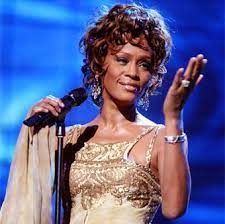
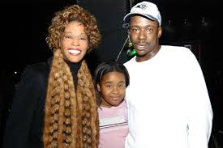
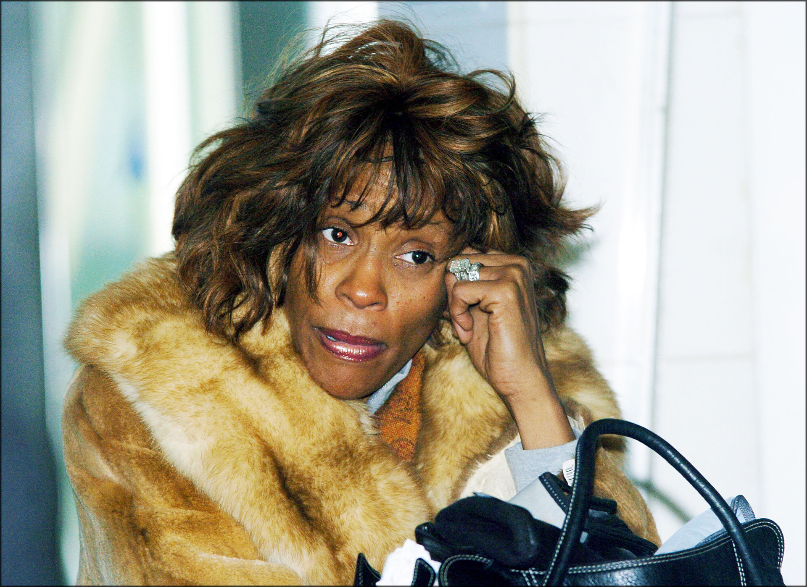

Whitney Houston fue una cantante y actriz estadounidense, nacida el 9 de agosto de 1963, en Newark, Nueva Jersey, y fallecida el 11 de febrero de 2012, en Beverly Hills, California. Es considerada como una de las artistas musicales más influyentes y exitosas de la historia, con una voz distintiva y una presencia escénica inigualable.
Houston nació en el seno de una familia musical. Su madre, Cissy Houston, era una reconocida cantante de gospel, y sus primos incluían a Dionne Warwick y Dee Dee Warwick. Desde temprana edad, Whitney mostró un talento vocal excepcional y comenzó a cantar en el coro de la iglesia, donde su madre era la directora de música.

Su carrera despegó en la década de 1980 con el lanzamiento de su álbum debut homónimo, "Whitney Houston", en 1985. El álbum incluía éxitos como "Saving All My Love for You" y "How Will I Know", estableciéndola como una superestrella de la música pop. Su segundo álbum, "Whitney" (1987), también fue un gran éxito, con sencillos como "I Wanna Dance with Somebody (Who Loves Me)" y "Didn't We Almost Have It All".
Whitney Houston tuvo una carrera musical extraordinariamente exitosa, marcada por una serie de éxitos que la consolidaron como una de las artistas más influyentes de la música pop y R&B. Algunos de sus mayores éxitos incluyen:
"Saving All My Love for You" (1985): Este fue su primer sencillo número uno en el Billboard Hot 100 y le valió su primer premio Grammy.
"How Will I Know" (1985): Este animado sencillo también alcanzó el número uno en el Billboard Hot 100, consolidando aún más su posición como una estrella pop.
"Greatest Love of All" (1986): Esta poderosa balada se convirtió en otro éxito número uno y se ha convertido en una de sus canciones más emblemáticas.
"I Wanna Dance with Somebody (Who Loves Me)" (1987): Esta canción bailable se convirtió en otro éxito número uno y ganó un premio Grammy por Mejor Interpretación Vocal Pop Femenina.
"Didn't We Almost Have It All" (1987): Otro sencillo exitoso que alcanzó el número uno en el Billboard Hot 100.
"One Moment in Time" (1988): Lanzada como el himno oficial de los Juegos Olímpicos de Verano de 1988, esta balada inspiradora también se convirtió en un gran éxito.
"I'm Your Baby Tonight" (1990): El álbum homónimo incluyó esta canción, que alcanzó el top 10 en las listas de éxitos.
"All the Man That I Need" (1990): Otro sencillo exitoso que alcanzó el número uno en el Billboard Hot 100.
"I Will Always Love You" (1992): Este cover de Dolly Parton para la banda sonora de "El Guardaespaldas" se convirtió en uno de los sencillos más exitosos de todos los tiempos y es quizás su canción más icónica.
"My Love Is Your Love" (1999): En la última etapa de su carrera, este álbum y su sencillo principal mostraron la versatilidad y la atemporalidad de su talento.
Estos éxitos son solo una muestra de la brillante carrera de Whitney Houston, cuyo legado perdura a través de su música.

Whitney Houston no solo dejó una marca imborrable en la música pop, sino que también incursionó en la actuación. En 1992, protagonizó junto a Kevin Costner la exitosa película "El Guardaespaldas" (The Bodyguard), cuya banda sonora incluía la icónica "I Will Always Love You", que se convirtió en su sencillo más exitoso.
A medida que su carrera avanzaba, Whitney Houston enfrentó desafíos personales, incluidos problemas de salud y luchas con el abuso de sustancias. A pesar de estos desafíos, su legado musical perdura. Whitney Houston es recordada como una de las voces más poderosas y emotivas de la música popular, y su impacto en la industria es innegable. Su influencia sigue resonando en generaciones posteriores de artistas.
Matrimonio y Familia: Whitney Houston estuvo casada con el también famoso cantante Bobby Brown en 1992. Tuvieron una hija, Bobbi Kristina Brown, nacida en 1993. La relación de Whitney y Bobby fue objeto de intensa atención mediática debido a sus altibajos y problemas personales.
Desafíos Personales: A lo largo de su vida, Whitney Houston enfrentó desafíos personales, incluyendo luchas contra el abuso de sustancias. Estos problemas afectaron su carrera y su imagen pública. Su adicción a las drogas y su relación tumultuosa con Bobby Brown fueron ampliamente documentadas.
Fallecimiento: Trágicamente, Whitney Houston falleció el 11 de febrero de 2012, a la edad de 48 años, en el Hotel Beverly Hilton en Beverly Hills, California. La causa oficial de su muerte fue un ahogamiento accidental en la bañera de su habitación de hotel, aunque también se mencionaron problemas cardíacos y el consumo de drogas como factores contribuyentes.

El fallecimiento de Whitney Houston conmocionó al mundo y generó un renovado interés en su legado musical y su impacto en la industria de la música. Su contribución a la música y su influencia en otros artistas continúan siendo recordadas y celebradas, a pesar de los desafíos personales que enfrentó durante su vida.